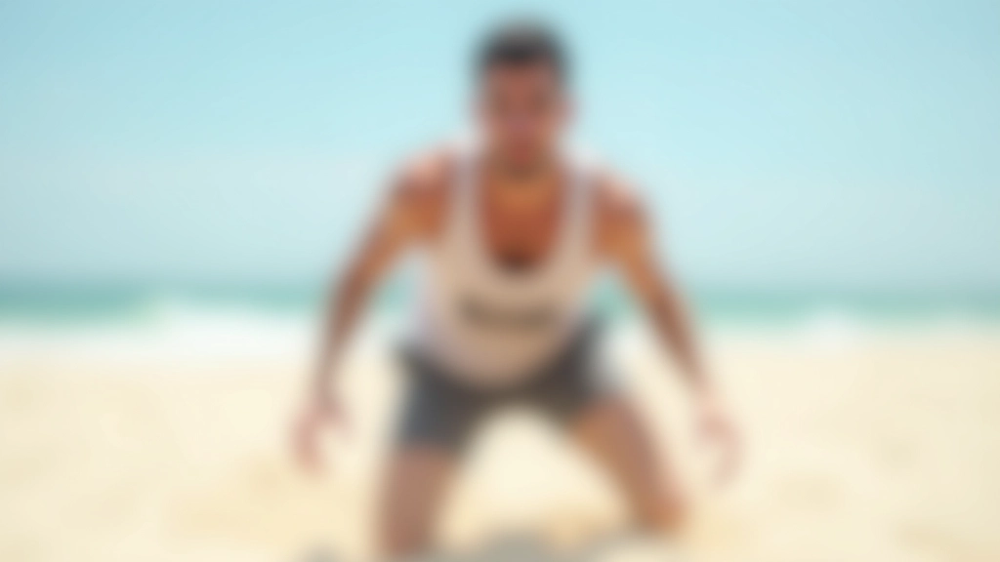
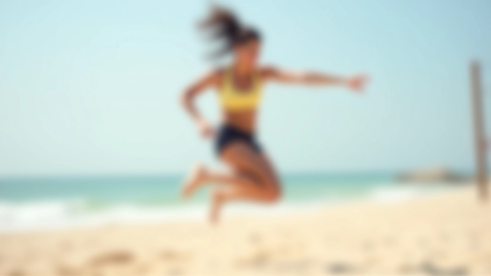
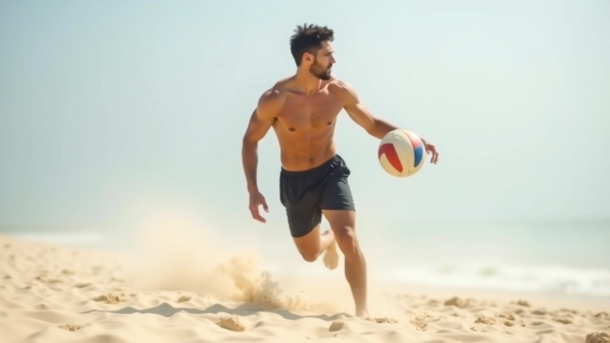
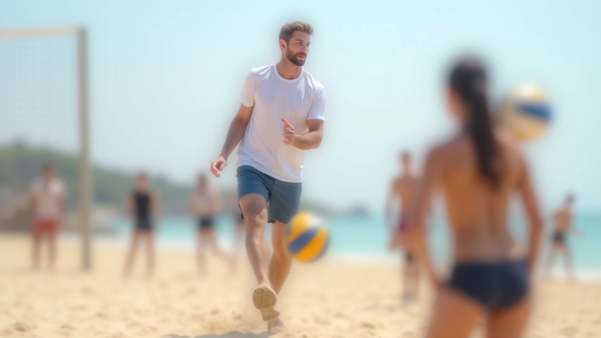

خطوات الحركة الأساسية للمبتدئين
تعرف على الطريقة الصحيحة للخطوة الأولى والحركات البطيئة التي تبني أساساً قوياً قبل الانتقال للحركات المتقدمة.
اقرأ المزيدإتقان الحركات المتقدمة على الرمل يتطلب فهماً عميقاً للميكانيكا الحركية والقوة والتوازن. نستعرض في هذا الدليل التقنيات الأساسية لتطوير قفزات قوية وحركات جانبية سريعة وتغييرات اتجاه فعالة على سطح الرمل المتحرك.


كتبه
فريق المحتوى والمراجعة التحريري
متخصصون في توفير إرشادات عملية وموثوقة لتمارين حركة الرمل في الكرة الطائرة الشاطئية.
الحركة على الرمل تختلف جذرياً عن الحركة على الأرض الصلبة. السطح غير المستقر يتطلب تفعيلاً أكبر للعضلات المثبتة والأساسية. عندما تبدأ في تطوير حركات متقدمة، أنت لا تقتصر على تحسين السرعة فحسب — بل تبني قوة وثبات أفضل.
المفتاح هنا يكمن في التدريج. لا تحاول تنفيذ قفزة مزدوجة إذا لم تتقن القفزة الفردية بعد. الأساس القوي يعني أن جسدك يعرف كيفية استقرار نفسه على الرمل قبل أن يحاول حركات معقدة.

الحقيقة المهمة: تطوير القفزات العالية على الرمل يأخذ 8-12 أسبوعاً من التدريب المنتظم. ثلاث جلسات أسبوعياً، 45 دقيقة لكل جلسة — هذا هو المعيار الذي نراه يعطي نتائج حقيقية.

القفزة على الرمل تبدأ من الأرض. وضعيتك قبل القفز تحدد 70% من نتيجتك. قدماك يجب أن تكونا على بعد عرض الكتفين تقريباً، والركبتان منحنيتان بزاوية 45 درجة تقريباً.
الخطوة الأولى هي الحركة الأساسية — خطوة صغيرة وسريعة نحو اتجاه القفز. لا تأخذ خطوات عملاقة. الخطوات الصغيرة السريعة تعطيك تحكماً أفضل على الرمل. ثم تأتي مرحلة الدفع — استخدم ساقيك بقوة، ثم ذراعاك تتحركان للأعلى لإضافة زخم إضافي.
الحركة الجانبية على الرمل تتطلب نوعاً مختلفاً من القوة. أنت تحتاج إلى عضلات الفخذ الخارجية قوية جداً. الخطوة الجانبية تبدأ بنقل وزنك على رجل واحدة، ثم تأتي الرجل الأخرى بسرعة.
المشكلة الشائعة: يحاول لاعبون جدد أخذ خطوات كبيرة جانباً. هذا يفقدك التوازن على الرمل. بدلاً من ذلك، استخدم خطوات صغيرة وسريعة. فكر في الأمر كأنك تجري جانباً بسرعة عالية بدلاً من القفز.

قفا عريضة، ركبتان منحنيتان، وزنك على كرات قدميك.
خطوة صغيرة بسرعة في الاتجاه المطلوب.
أضف خطوات سريعة متتالية، ليس قفزات.
أوقف حركتك بسلاسة، ركبتاك منحنيتان للامتصاص.

لا يمكنك تطوير هذه الحركات من خلال الأداء فقط. تحتاج إلى تدريبات مكثفة ومنتظمة. الجلسة الجيدة تبدأ بتسخين كامل لمدة 10 دقائق على الأقل.
بعد ذلك، قم بتمارين تقوية العضلات الأساسية — الجلوس الكامل، تمارين الرفع الجانبية، وتمارين الضغط. ثم ينتقل التركيز إلى الحركات المحددة. جلسة من 45 دقيقة تشمل: 10 دقائق تسخين، 15 دقيقة تقوية، 15 دقيقة حركات متقدمة، 5 دقائق تبريد.
تطوير الحركات المتقدمة والقفزات على الرمل ليس سهلاً، لكنه ممكن تماماً مع الصبر والتدريب المنتظم. الأساس القوي يجب أن يأتي أولاً. ثم تأتي الحركات الجانبية السريعة. وأخيراً، تتقن القفزات المزدوجة والحركات المعقدة.
تذكر دائماً: الرمل يعلمك الكثير عن جسدك. إنه يكشف الضعف والعدم التوازن. استخدم هذا التعليم لصالحك. كل جلسة تدريب هي فرصة للتحسن.
هذا المحتوى مخصص لأغراض تعليمية وإعلامية فقط. الحركات والتقنيات الموصوفة تتطلب إشرافاً مهنياً وتدريباً منتظماً. يرجى استشارة مدرب مختص قبل البدء في أي برنامج تدريبي جديد، خاصة إذا كان لديك إصابات سابقة أو مشاكل صحية. كل فرد يختلف في قدرته البدنية، والتقدم يختلف من شخص لآخر.
اكتشف المزيد من الأدلة والتقنيات
تعرف على الطريقة الصحيحة للخطوة الأولى والحركات البطيئة التي تبني أساساً قوياً قبل الانتقال للحركات المتقدمة.
اقرأ المزيد
اكتشف تمارين متخصصة لتطوير حركتك الجانبية وزيادة سرعتك على الرمل مع الحفاظ على التوازن الكامل.
اقرأ المزيد
تعلم كيفية الوقوف والحفاظ على توازنك على سطح غير مستقر، وهو أساس كل حركة متقدمة.
اقرأ المزيد